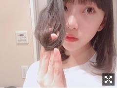
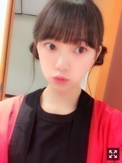

2018/0616Sat降りかかった雨に傘をさす
最近観た映画
ミスミソウ
レザーフェイス
恋は雨上がりのように
OVER DRIVE
どれも本当に良かった。。
全部、違う感情で胸が熱くなりました
日々勉強になることばかり
私も頑張らくては！
最近雨続きで、寒いですねー
風邪ひいてませんか？
わたしは喉があんまり本調子じゃありません...
ややハスキー
声帯が弱いみたい（´-`）.｡oO
皆さんも、体調には気をつけてください！
晴れの形は人それぞれでいい。

髪の毛アピールしようとしたら
持ち方が独特すぎた！笑

はっぴ 着て ハッピー
なんちって。
この口よくやってるらしい。
お母さんに、気の抜けた口してると変やでちゃんと意識しなさいって言われてからこれがクセになってる気がする。笑
クセってなかなか治らんよね〜
明日は仙台！
愛しの牛タンと、ファンの皆さんが
待ってますね！よーし
飛んでいきまーす(｀･ω･´)
待っとりんしゃい！
じゃね。
2018/06/16 21:00
コメント(306)
可愛い！レザーフェイス面白いよね！！
未央奈ちゃん。ブログ更新ありがとう！東京は寒暖の差かなり大きいので、風邪ひかないでね。牛タン好きなんですね？わたしは、焼き肉の塩タンが、好きです。
みおな、こんばんは(^_^)
みおなも喉が本調子じゃないんだね(>_<)
真夏さんも風邪で声が枯れてたから、悪化しないように気をつけてね(^_^;)
みおなのかわいいハッピ姿を見れて、ハッピー＼(^o^)／
それじゃ、またね(^o^)／
みおなも喉が本調子じゃないんだね(>_<)
真夏さんも風邪で声が枯れてたから、悪化しないように気をつけてね(^_^;)
みおなのかわいいハッピ姿を見れて、ハッピー＼(^o^)／
それじゃ、またね(^o^)／
題名が瞬きって曲の歌詞みたい！！
綺麗な旋律だから、知らなかったら聴いてみて〜！！
綺麗な旋律だから、知らなかったら聴いてみて〜！！
こんばんは。ブログ更新ありがとうございます。
今日は寒かったですね！！私は今日のような梅雨寒むを警戒して、ファンヒーターをしまわないでいました。
くせになっている口の形、でも可愛いと思いますっ！！
話はかわって、未央奈ちゃんもブログをまめに更新してくれるのすごく嬉しいです！！乃木坂46の中でも回数を数えたら、かなりんに続くくらいだと思います。これからも頑張ってね！！
ではまた。
今日は寒かったですね！！私は今日のような梅雨寒むを警戒して、ファンヒーターをしまわないでいました。
くせになっている口の形、でも可愛いと思いますっ！！
話はかわって、未央奈ちゃんもブログをまめに更新してくれるのすごく嬉しいです！！乃木坂46の中でも回数を数えたら、かなりんに続くくらいだと思います。これからも頑張ってね！！
ではまた。
堀ちゃん、お疲れ様。髪形似合ってるよ～
未央奈、こんばんは！
未央奈のその口、たしかによく見るね！
可愛くて好きやよ！！
明日は、仙台やね。
牛タン味わって、握手会ファイト！
しっかり休んでね。
未央奈のその口、たしかによく見るね！
可愛くて好きやよ！！
明日は、仙台やね。
牛タン味わって、握手会ファイト！
しっかり休んでね。
未央奈～
ブログ更新ありがとう✨
俺も雨、好きだなぁ☔️
なんか景色と匂いが好き☔️
喉、気おつけてね(｡>ㅿ<｡)
これからも、応援してるよー‼️
(*´∨｀* )ﾉ
ブログ更新ありがとう✨
俺も雨、好きだなぁ☔️
なんか景色と匂いが好き☔️
喉、気おつけてね(｡>ㅿ<｡)
これからも、応援してるよー‼️
(*´∨｀* )ﾉ
未央奈ちゃんこんばんは‼ありがとうございます！今日から頑張ります‼自分も頑張ります‼
急に寒くなったりするから、風邪も引きやすいよね。俺は、ちゃんと健康管理もしっかりとしているから風邪引かないんだ。
未央奈、早く声帯良くなってネッ。
あと、乃木坂コンサートの二次抽選で9/1の宮城公演当選したんだ。
未央奈、早く声帯良くなってネッ。
あと、乃木坂コンサートの二次抽選で9/1の宮城公演当選したんだ。
未央奈更新ありがとう。
僕の最近見ようと思っている映画は空飛ぶタイヤかな
見た映画は名探偵コナンのとアドベンチャーズを見たよ未央奈が見たって言っていたのも見ようかな今、映画の見たら面白そうなのいくつかあったから！
未央奈喉大丈夫？僕はどうにも出来ないけど早く治るといいね！
そして松井さん総選挙一位だね！未央奈はもう何か言ったのかな？松井さんもここ数日大変だっただろからね
未央奈の「この口やっているらしい」の写真超可愛い これ癖なんだね握手会とかで見られるかもしれないね楽しみーーー
これ癖なんだね握手会とかで見られるかもしれないね楽しみーーー
癖ってなかなか治らないよね僕も苦労しているよ。なかなか治らなくてお互い治るように頑張ろ！
明日は握手会だっけ未央奈も握手会色々あると思うけど楽しんでーー未央奈が楽しそうならファンの方もそれが一番だと思うから！！牛タン沢山食べれるといいね！
そうだ一つ質問（今、なんばしよっと？）ではおやすみーおな
僕の最近見ようと思っている映画は空飛ぶタイヤかな
見た映画は名探偵コナンのとアドベンチャーズを見たよ未央奈が見たって言っていたのも見ようかな今、映画の見たら面白そうなのいくつかあったから！
未央奈喉大丈夫？僕はどうにも出来ないけど早く治るといいね！
そして松井さん総選挙一位だね！未央奈はもう何か言ったのかな？松井さんもここ数日大変だっただろからね
未央奈の「この口やっているらしい」の写真超可愛い
癖ってなかなか治らないよね僕も苦労しているよ。なかなか治らなくてお互い治るように頑張ろ！
明日は握手会だっけ未央奈も握手会色々あると思うけど楽しんでーー
そうだ一つ質問（今、なんばしよっと？）ではおやすみーおな
堀ちゃんブログ更新ありがとう！
OVER DRIVE見たんだ！いいなー！僕も見たい！
握手会頑張ってね！
体調に気をつけて無理しないようにね。
僕も牛タン食べたい！
OVER DRIVE見たんだ！いいなー！僕も見たい！
握手会頑張ってね！
体調に気をつけて無理しないようにね。
僕も牛タン食べたい！
未央奈ちゃん♪こんばんは＼(^o^)／
すごく寒いね。
喉大丈夫？早く治りますように。
未央奈ちゃんも体調気を付けてね。
写真可愛い(//∇//)
クセってなかなかなおらないね(^_^;)
明日楽しんでね(*^^*)
じゃあね♪
未央奈ちゃん神推し
秀喜より！(≧▽≦)
すごく寒いね。
喉大丈夫？早く治りますように。
未央奈ちゃんも体調気を付けてね。
写真可愛い(//∇//)
クセってなかなかなおらないね(^_^;)
明日楽しんでね(*^^*)
じゃあね♪
未央奈ちゃん神推し
秀喜より！(≧▽≦)
堀ちゃんお疲れ様です^ ^
握手会、一回でいいから行ってみたい*\(^o^)/*
今度機会があれば応募してみようかな^ ^
握手会、一回でいいから行ってみたい*\(^o^)/*
今度機会があれば応募してみようかな^ ^
応援してます！
真夏さんも喉の調子が悪そうでしたし、本当に風邪には気をつけて下さいね！！
体調崩したら無理せずゆっくり休んで下さいね！！！
僕は元気な堀ちゃんが大好きです☺️
僕も生きてるうちに一回は仙台行って牛タン食べてえええええ
体調崩したら無理せずゆっくり休んで下さいね！！！
僕は元気な堀ちゃんが大好きです☺️
僕も生きてるうちに一回は仙台行って牛タン食べてえええええ
ブログ更新ありがとう！
体には気をつけてがんばってください！
一日のしめに牛タン頬張ってね！
体には気をつけてがんばってください！
一日のしめに牛タン頬張ってね！
堀ちゃん相変わらず尊すぎてしんどいw
可愛すぎますよ
破壊力ヤバイです
ミスミソウ気になってたから見よーかな！
可愛すぎますよ
破壊力ヤバイです
ミスミソウ気になってたから見よーかな！
かわいい！
いつもお疲れ様～
最近寒いから体調管理気をつけてね

最近寒いから体調管理気をつけてね
未央奈、ブログありがとう(^^)
梅雨の時期はとても寒いし冷たいね、喉の調子 良くなること祈ってます！
今日のモバメの話ですが、未央奈のことほんの少しでも支えれていたらいいなと思います。仙台の握手会楽しんできてください！来週の東京 楽しみにしています(^^)
梅雨の時期はとても寒いし冷たいね、喉の調子 良くなること祈ってます！
今日のモバメの話ですが、未央奈のことほんの少しでも支えれていたらいいなと思います。仙台の握手会楽しんできてください！来週の東京 楽しみにしています(^^)
ほりみおな〜(๑˃̵ᴗ˂̵)(*≧∀≦*)
自分住んでるとこは福井だけど 最近は晴れてるよ
でもその割には なんか寒いのよ
自分住んでるとこは福井だけど 最近は晴れてるよ
でもその割には なんか寒いのよ
堀ちゃんブログ更新ありがとう^ ^
喉の調子が悪いんだね。握手会無理しちゃダメだよ。
堀ちゃんは頑張り屋さんだから心配だなぁ。
モバメ見たけど私も堀未央奈単推しだよー。
これからも応援してるよ。大好き( ´ ▽ ` )
喉の調子が悪いんだね。握手会無理しちゃダメだよ。
堀ちゃんは頑張り屋さんだから心配だなぁ。
モバメ見たけど私も堀未央奈単推しだよー。
これからも応援してるよ。大好き( ´ ▽ ` )
雨続いてる。 明日は、晴れ
写メ全部可愛い
大好きです。
写メ全部可愛い
大好きです。
未央奈、今日も一日お疲れさまでした。
「恋は雨上がりのように」
観に行けたんですね。良かったです。
最初の小松菜奈さんのかっこいいワイヤーアクションシーンから始まり、校内放送でうっすら「フロントメモリー」がかかっているところからスタート。
爽快感溢れる感じがとても良かったです。
全体を通して、僕は大泉さんの演技を見るのが楽しみだったので、優しすぎる姿や、心配しすぎる姿など。細かな演技まで素晴らしかったなと思います。
恋雨の話しは、また握手会でしましょう。
いろいろ話せるといいなー笑
僕個人として未央奈にオススメしたい映画は
「犬ヶ島」という映画です！
主人公のアタリと、5匹の犬たちとの物語で、
全編ストップモーション・アニメーションという撮影方法で作られた映画です。ぜひ、観てもらいたい作品です。。。
その他、今、個人的に気になってる映画は
「ワンダー 君は太陽」
「未来のミライ」
「検察側の罪人」
「きみの鳥はうたえる」
この4作品です。
ワンダー 君は太陽は6/15から公開スタートしたので、時間がある時に観に行きます！他3作品は公開が先なので今から楽しみ♪( ´▽｀)
って感じで、
僕の映画観賞も、少しは充実してます。
これも、未央奈の映画好きに影響されちゃったんですけどね笑
癖って、なかなか直さないですよね。
僕もよく注意されることがあるけど、やっぱ意識しないと直らないもので。。。
「良くないなー」ってわかってながらもやってしまう…。「今年中に直そう」とか、目標を作らないとダメですね。。。
お互い、自分の癖を直していきましょうm(_ _)m
明日は、握手会ですね。僕もちょこっと顔を出すので、よろしくですm(_ _)m
話したいこともあるので、お時間許す限りお話ししましょう。。。
じゃあ、最後に。
体調管理には気をつけてね。
休みたいときは、思い切って休むのもアリです！
自分のことを優先するのが、時には必要だと、僕は思いますよm(_ _)m
ではでは、ねこでした。
未央奈ー！
更新ありがと(*^^*)
もう梅雨だね。喉お大事にしてください(´ｰ｀)
3、4枚目の髪型すごいドストライクです。可愛い…
未央奈その口確かによくやってるね(笑)
そのクセ可愛くて好きです。
明日の握手会がんばってね(•̀ᴗ•́)و ̑̑
牛タン思う存分食べてたくさん癒されてきてください。
またブログ待ってます！
更新ありがと(*^^*)
もう梅雨だね。喉お大事にしてください(´ｰ｀)
3、4枚目の髪型すごいドストライクです。可愛い…
未央奈その口確かによくやってるね(笑)
そのクセ可愛くて好きです。
明日の握手会がんばってね(•̀ᴗ•́)و ̑̑
牛タン思う存分食べてたくさん癒されてきてください。
またブログ待ってます！
タイトルがbacknumberの瞬きみたい
堀ちゃん、頑張れー
堀ちゃん、頑張れー
明日楽しみ！！
2部3部遊びに行くねー！！
明日起きれるかな〜謎
ばいぃ
握手会頑張ってください
まなったんもそうやけど喉気を付けてな
福岡で待ってます
喉お大事に~
福岡で待ってます
喉お大事に~
ブログ更新ありがとう‼
映画観るのホントに好きなんだね‼
これからもお仕事頑張ってください。
応援してます‼
映画観るのホントに好きなんだね‼
これからもお仕事頑張ってください。
応援してます‼
ほんと最近寒いわ
声は大事だからな、お大事にな
そのクセかわいすぎだろ笑
握手会頑張れ〜 俺23のやつ行くから待っててな！
声は大事だからな、お大事にな
そのクセかわいすぎだろ笑
握手会頑張れ〜 俺23のやつ行くから待っててな！
ほりっぴー！
ブログ更新ありがとう♡
back numberさんほんと大好きね(*˙˘˙*)♪
恋は雨上がりのようにについて
未央奈とほんと話したい(笑)
握手会行けないのが残念すぎる(;o;)
この前巡礼してきちゃったわよ←
ハッピーはっぴ姿ほんと可愛すぎ！！！
その髪型どうなってるの？
教えて下さい(人･_･)♡
ブログ更新ありがとう♡
back numberさんほんと大好きね(*˙˘˙*)♪
恋は雨上がりのようにについて
未央奈とほんと話したい(笑)
握手会行けないのが残念すぎる(;o;)
この前巡礼してきちゃったわよ←
ハッピーはっぴ姿ほんと可愛すぎ！！！
その髪型どうなってるの？
教えて下さい(人･_･)♡
喉はやくなおしてねー、！！！
未央奈！
案の定、思いっきり風邪ひいてます笑
喉と鼻をやっちゃってます笑
僕は行けませんが、明日の握手会頑張ってください！
牛タンも楽しんでくださいね。
案の定、思いっきり風邪ひいてます笑
喉と鼻をやっちゃってます笑
僕は行けませんが、明日の握手会頑張ってください！
牛タンも楽しんでくださいね。
未央奈可愛すぎ〜
めっちゃ大好きです！
これからも応援してます！！
写真が保存できません。
自分だけでしょうか？泣
めっちゃ大好きです！
これからも応援してます！！
写真が保存できません。
自分だけでしょうか？泣
タイトルback numberの歌詞だね！
確かに持ち方独特ww
その口よく見る！笑
その髪型めっちゃ好き(*´∇｀*)
そういう癖って治らないよねw
仙台の個握楽しんでね〜！
確かに持ち方独特ww
その口よく見る！笑
その髪型めっちゃ好き(*´∇｀*)
そういう癖って治らないよねw
仙台の個握楽しんでね〜！
堀さん、こんばんは。
今日は朝には半袖のシャツを着たのですか、思いの外気温が低くてひんやりしたので、すぐに長袖のシャツに着替えましたよ。六月はこういう肌寒い日がまだあるので注意、注意。
法被着てハッピーは、毎回ブログの締めのだじゃれに悩んでいるという山下さんに、ぜひ教えて上げて欲しいものです（にや）。
明日の仙台での握手会もがんばってください。
ではまたコメント寄せに参上します。
さらばだ、また会おう！（気球に乗って去りぬ～）
今日は朝には半袖のシャツを着たのですか、思いの外気温が低くてひんやりしたので、すぐに長袖のシャツに着替えましたよ。六月はこういう肌寒い日がまだあるので注意、注意。
法被着てハッピーは、毎回ブログの締めのだじゃれに悩んでいるという山下さんに、ぜひ教えて上げて欲しいものです（にや）。
明日の仙台での握手会もがんばってください。
ではまたコメント寄せに参上します。
さらばだ、また会おう！（気球に乗って去りぬ～）
堀ちゃんファンで俺もハッピーや
更新いつもありがとうございます！
お風呂でシャワーでうがいするといいですよ〜！喉お大事にしてください。
しかしはっぴを着たほーりーもいいですね笑✨ その髪型も可愛いです、、、。赤が似合うな〜
またの更新楽しみです！
お風呂でシャワーでうがいするといいですよ〜！喉お大事にしてください。
しかしはっぴを着たほーりーもいいですね笑✨ その髪型も可愛いです、、、。赤が似合うな〜
またの更新楽しみです！
ハッピーの髪型川後はんもやってたけどやっぱ堀さんも似合ってて可愛いです
ブログ更新ありがとう！
風邪気をつけてね
ジメジメして梅雨は嫌いだな～
クセは人それぞれあるけど未央奈は可愛い
これからも頑張ってね！
風邪気をつけてね
ジメジメして梅雨は嫌いだな～
クセは人それぞれあるけど未央奈は可愛い
これからも頑張ってね！
みおな〜〜！！明日の握手会いくよ〜！！♡
初めてだけどとってもたのしみ！！風邪に気をつけてね(´･_･`)♡
初めてだけどとってもたのしみ！！風邪に気をつけてね(´･_･`)♡
未央奈！(*´꒳`*)
このコメント、１つ前のに書くつもりだったけど、新しいの来てたからこちらに書くよ！
ブログ自体のコメントは後でねー^ ^
ざる蕎麦が美味しい季節だねー。
ざる蕎麦の話をするのは、ざる蕎麦は太りにくい食べ物だから堀ちゃんにオススメかなって。^ ^
最後に注意したい点も書いてみるけど、とりあえずおすすめポイント！！
・まずざる蕎麦はカロリーが低いです！！
・そして蕎麦の原料の蕎麦粉は、血糖値が上がりにくい食べ物です！
※血糖値が高まると、インスリンという物質が分泌されるのですが、これは体に脂肪としてエネルギーをためる働きをするので、血糖値が上がりにくい食べ物は比較的太りにくい。
・蕎麦にはルチンが含まれていて、これが血液をサラサラにする効果が認められています。基礎代謝向上する効果が期待できますし、ルチンはビタミンCの吸収を助けるので美容には有りだと思います！！
・蕎麦はビタミンB群が豊富です。
※ビタミンB群は、脂質や糖質の代謝を良くする働きがあると言われています。脂質や糖質が脂肪になる前に代謝する事で太りにくくなるはずです。
・薬味でネギと食べるかと思いますが、ネギはアリシンという栄養素があり、これはビタミンB1の吸収を助けてくれます。B1をしっかり摂取出来ていると、糖質の代謝に効果的です。
さて注意点。あまり細かく言ってもあれなので3点だけ！
・蕎麦の種類に注意。十割蕎麦、二八蕎麦等、蕎麦比率が高いお蕎麦がおすすめ。繋ぎの多い蕎麦はちょっとだけうどんと似た食べ物になります。
・何事もバランスが大事。蕎麦だけ食べてはいけません。少しだけ食べる回数を増やすくらいがちょうどいいとおもうよ！
・蕎麦の栄養素は水溶性が多いです。蕎麦湯も少しは頂くと満腹感も足されるし、栄養素も有るのでおすすめです。飲み過ぎは良くないけど一杯くらいは飲んだらいいんじゃ無いかな？
はいー。とりあえずお蕎麦の紹介でした。美味しいし、暑い日も食べやすいし、たまには食べよー！！^ ^
このコメント、１つ前のに書くつもりだったけど、新しいの来てたからこちらに書くよ！
ブログ自体のコメントは後でねー^ ^
ざる蕎麦が美味しい季節だねー。
ざる蕎麦の話をするのは、ざる蕎麦は太りにくい食べ物だから堀ちゃんにオススメかなって。^ ^
最後に注意したい点も書いてみるけど、とりあえずおすすめポイント！！
・まずざる蕎麦はカロリーが低いです！！
・そして蕎麦の原料の蕎麦粉は、血糖値が上がりにくい食べ物です！
※血糖値が高まると、インスリンという物質が分泌されるのですが、これは体に脂肪としてエネルギーをためる働きをするので、血糖値が上がりにくい食べ物は比較的太りにくい。
・蕎麦にはルチンが含まれていて、これが血液をサラサラにする効果が認められています。基礎代謝向上する効果が期待できますし、ルチンはビタミンCの吸収を助けるので美容には有りだと思います！！
・蕎麦はビタミンB群が豊富です。
※ビタミンB群は、脂質や糖質の代謝を良くする働きがあると言われています。脂質や糖質が脂肪になる前に代謝する事で太りにくくなるはずです。
・薬味でネギと食べるかと思いますが、ネギはアリシンという栄養素があり、これはビタミンB1の吸収を助けてくれます。B1をしっかり摂取出来ていると、糖質の代謝に効果的です。
さて注意点。あまり細かく言ってもあれなので3点だけ！
・蕎麦の種類に注意。十割蕎麦、二八蕎麦等、蕎麦比率が高いお蕎麦がおすすめ。繋ぎの多い蕎麦はちょっとだけうどんと似た食べ物になります。
・何事もバランスが大事。蕎麦だけ食べてはいけません。少しだけ食べる回数を増やすくらいがちょうどいいとおもうよ！
・蕎麦の栄養素は水溶性が多いです。蕎麦湯も少しは頂くと満腹感も足されるし、栄養素も有るのでおすすめです。飲み過ぎは良くないけど一杯くらいは飲んだらいいんじゃ無いかな？
はいー。とりあえずお蕎麦の紹介でした。美味しいし、暑い日も食べやすいし、たまには食べよー！！^ ^
明日握手会行きます！
めっちゃ楽しみ、、！
めっちゃ楽しみ、、！
こんばんは。
みおなちゃんのはっぴ姿は意外と似合ってるよ。
でも派手なはっぴだね。
祭りのか何か？それとも私物？(笑)
みおなちゃんは牛タンを愛してるんだ(笑)
でも俺も牛タンが好きなんだけどね。
なんか仙台の牛タンって違うよね。
俺は近くの埼玉の店で牛タンを食べたけど、なんか全然美味しくなくて(><)
仙台で食べた牛タンの方が５倍くらい美味しかった気がするよ(^^;)
仙台がもっと近ければって感じだけど。
なんか埼玉で美味しい物を食べようと思っても、埼玉名物なんてないし（苦笑）
じゃあ。
みおなちゃんのはっぴ姿は意外と似合ってるよ。
でも派手なはっぴだね。
祭りのか何か？それとも私物？(笑)
みおなちゃんは牛タンを愛してるんだ(笑)
でも俺も牛タンが好きなんだけどね。
なんか仙台の牛タンって違うよね。
俺は近くの埼玉の店で牛タンを食べたけど、なんか全然美味しくなくて(><)
仙台で食べた牛タンの方が５倍くらい美味しかった気がするよ(^^;)
仙台がもっと近ければって感じだけど。
なんか埼玉で美味しい物を食べようと思っても、埼玉名物なんてないし（苦笑）
じゃあ。
みおな大好き！
体調気を付けてね
最近乃木中にみおな出てなくて
みおな不足
体調気を付けてね
最近乃木中にみおな出てなくて
みおな不足
堀ちゃん、こんばんは。
昨年か一昨年が忘れたけど、仙台に行くとメンバー間で牛タン券の取り引き（笑）があったと乃○中で誰かが（笑）言ってましたよね。僕は食わず嫌いで牛タンを食べた事がないので美味しさがわからないのですが、取り引きになるほど美味しいのですか？。
昨年か一昨年が忘れたけど、仙台に行くとメンバー間で牛タン券の取り引き（笑）があったと乃○中で誰かが（笑）言ってましたよね。僕は食わず嫌いで牛タンを食べた事がないので美味しさがわからないのですが、取り引きになるほど美味しいのですか？。
更新ありがとうございます！
気温差が大きいので体調には気をつけてください！
明日、休みなので堀ちゃんが観た映画少し観てみますね！
あと、神宮の2日目と宮城の2日目当たりました！
堀ちゃんを観に行きますね！！
バレッタ聴けるといいな〜
気温差が大きいので体調には気をつけてください！
明日、休みなので堀ちゃんが観た映画少し観てみますね！
あと、神宮の2日目と宮城の2日目当たりました！
堀ちゃんを観に行きますね！！
バレッタ聴けるといいな〜


その口よく見る！てか好きです！！